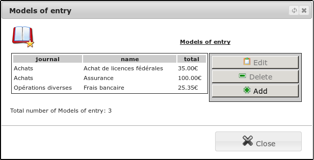
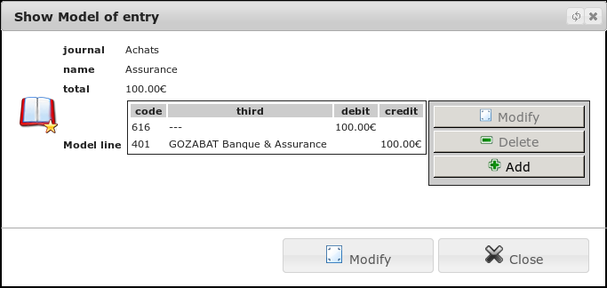
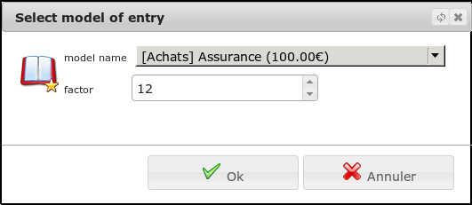

Model¶
Declaring a model¶
A writing style is a set of scriptures lines stored in advance as you can replay as often as you want. From the menu Financial/Bookkeeping/Models of entity, you access the list of models.

A model is associated with a newspaper and contains a description and list of lines comprising a code book and an amount.

We advise you to create a template for each of your expenses (or recipe) regular. Thus you will save time on entering your accounting without having to search for the right accounting code.
Using a template¶
Using a model is very simple. With the Template button present in the list of entries, a selection model is presented.

Select your model and specify a multiplier. This factor is very convenient when you have recurring invoices but the amount may fluctuate. It is then possible, è Using this real, to refine it. Once validated, a write is generated following the model description. You can correct it as any writing.